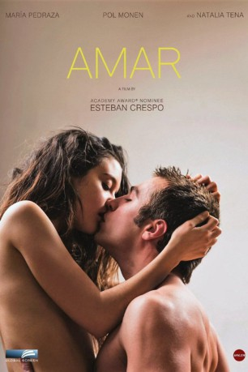

IMDB-Wertung: 5.3 / 10
IMDB-Wertung: 5.3 / 10  Metascore:
Metascore: 
Laura und Carlos erleben die Intensität und Zerbrechlichkeit der ersten Liebe, aber ihre idealisierten Vorstellungen werden schnell von der Wirklichkeit eingeholt.
 IMDB-Wertung: 5.3 / 10 Metascore:
Laura und Carlos erleben die Intensität und Zerbrechlichkeit der ersten Liebe, aber ihre idealisierten Vorstellungen werden schnell von der Wirklichkeit eingeholt.
Jahr: 2017
Dauer: 105 Minuten
FSK:
Land: Spanien Studio: Amazing D.C.Tonspuren:
Untertitel: Deutsch, Englisch,
Auflösung: 1080p (1920x800) Größe: 3799 MB
Regisseur: Esteban Crespo
Drehbuch: Esteban Crespo
Soundtrack:
Darsteller:
 Natalia Tena als
Natalia Tena als Datei: X:\2017(A-F)\Amar (2017, FSK, 1920x800).mkv seit 18.07.2017
Festplatte: HD 2017(A-Z)-2018(A-F)
 Es gibt insgesamt 152 Filme in der Gruppe '2017(A-F)'
Es gibt insgesamt 152 Filme in der Gruppe '2017(A-F)'